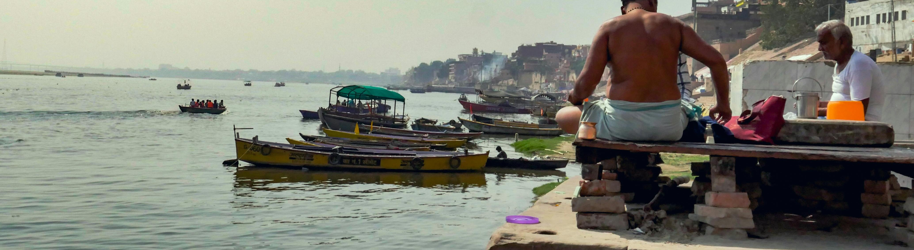
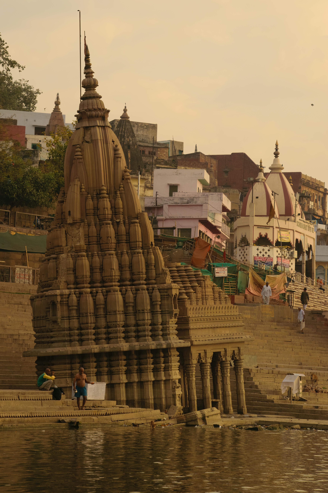
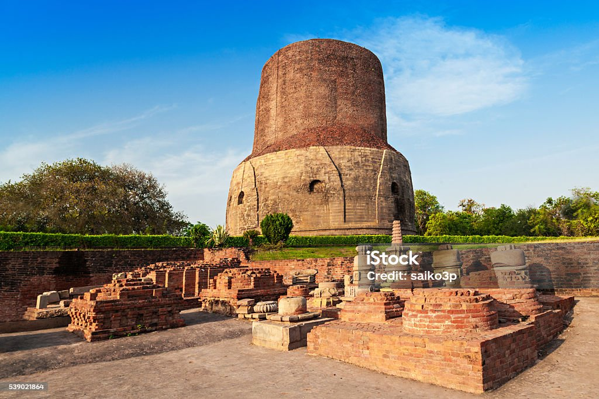

Ganga Ghats
Varanasi is known for its mesmerizing ghats, including Dashashwamedh Ghat, Assi Ghat, and Manikarnika Ghat. The evening Ganga Aarti at Dashashwamedh Ghat is a soul-stirring experience that attracts visitors from around the world.
Learn More
Sacred Temples
Home to revered temples like Kashi Vishwanath Temple, Sankat Mochan Temple, and Durga Temple. The Kashi Vishwanath Temple is one of the twelve Jyotirlingas and the most important pilgrimage site in Varanasi.
Learn More
Sarnath
Sarnath is a major Buddhist pilgrimage site where Lord Buddha gave his first sermon after enlightenment. It houses the famous Dhamek Stupa, archaeological museum, and several ancient monasteries.
Learn More
Ramnagar Fort
An architectural marvel from the 18th century, showcasing a blend of Mughal and Indian styles. It hosts the grand Ramlila festival and houses a museum with vintage cars, royal costumes, and antique weapons.
Learn MoreBanaras Hindu University
Founded in 1916, BHU is one of India's most prestigious institutions, known for its sprawling campus and the Vishwanath Temple. The university campus is a beautiful blend of education and spirituality, attracting scholars from around the globe.
Learn More